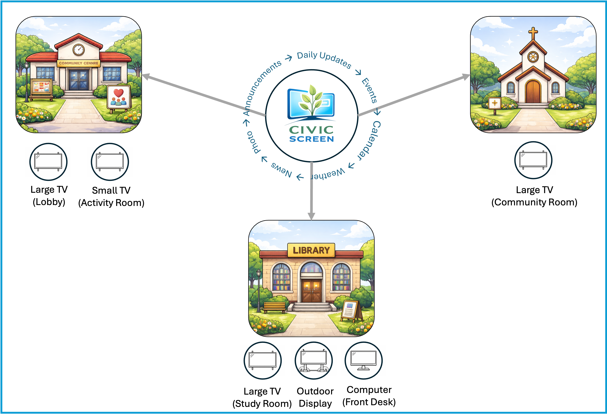

How Civic Screen Works
- Civic Screen acts as a central digital bulletin board for multiple community organizations.
Each organization manages its own content and displays it across screens in different locations.
-
Civic Screen runs as a lightweight web application and can be displayed using a standard
web browser on TVs, monitors, or tablets.
-
Once configured, screens run unattended and automatically rotate through announcements,
events, and other community information.
-
Each display can be configured to show the information most relevant to its location.
For example, a front desk screen may focus on announcements and today’s events, while
a meeting room display may highlight schedules and upcoming activities.
-
Civic Screen is built to run continuously in public environments and to recover gracefully
from restarts or network interruptions.
